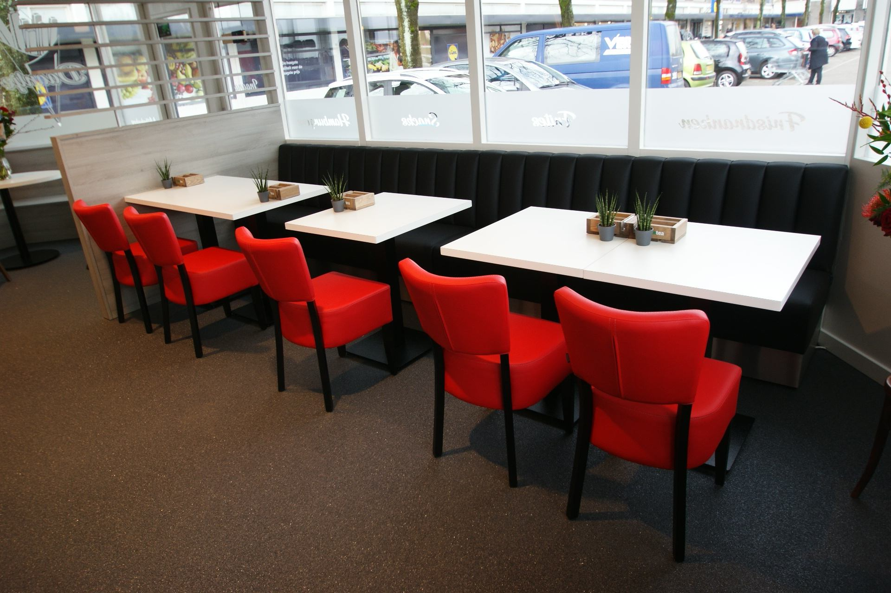
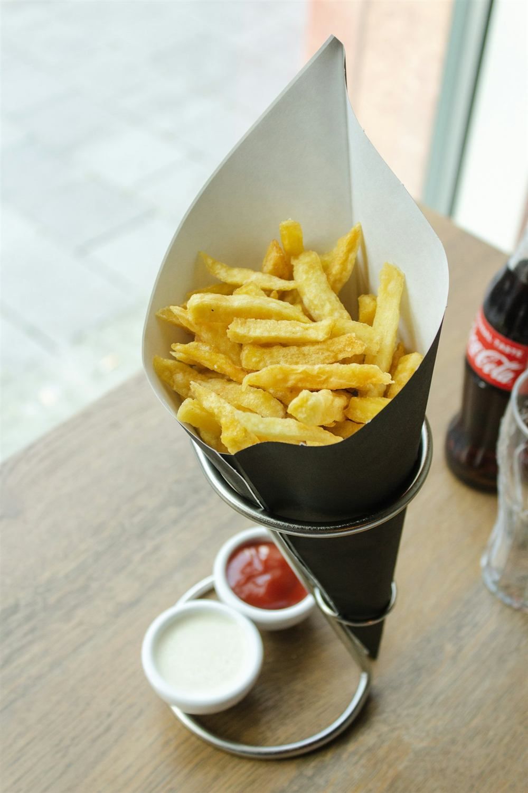
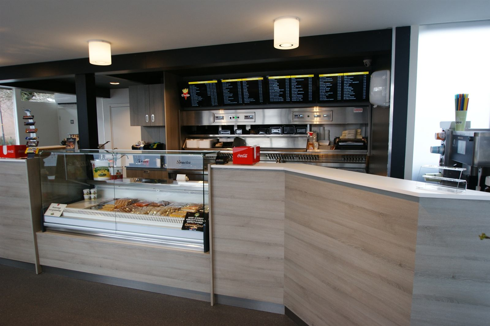
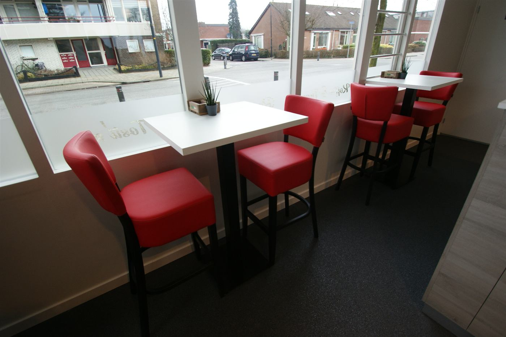
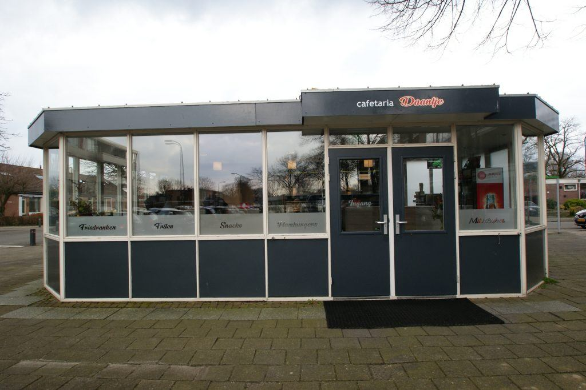
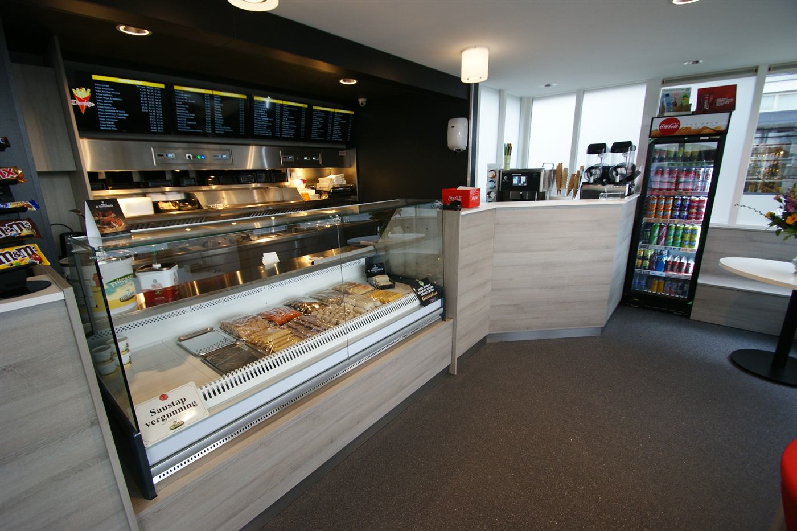
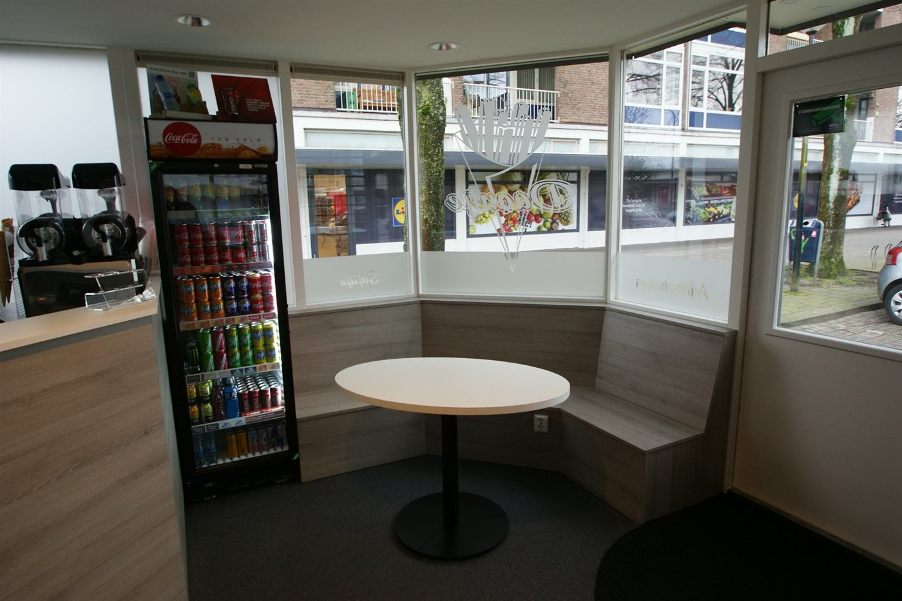

Cafetaria Daantje
Frites, snacks en vers softijs in winkelcentrum Maasstraat, Apeldoorn-Zuid.
Iedere dag open vanaf 11.30 uur
Top service, kwaliteit en smaak
Cafetaria Daantje is het gezicht op een vertrouwde plek in winkelcentrum Maasstraat in Apeldoorn-Zuid. U bent van harte welkom in onze moderne cafetaria, waar topservice, kwaliteit en smaak elke dag weer de reden zijn u te mogen ontvangen.
U kunt bij ons terecht voor een ruim assortiment aan kwaliteitssnacks en heerlijke frites. Naast de snacks die iedereen kent is er een ruime keuze uit vegetarische en glutenvrije snacks, frites en sausen. Zo is er voor ieder iets lekkers te verkrijgen: kom langs en proef het verschil!
-
Kip vers van de poelier
Een ruime keuze aan kipproducten, vers van de poelier.
-
Daantjes kanjer
Ambachtelijke gehaktballen van onze slager, volgens unieke receptuur. Daar komt u zeker voor terug.
-
Saté met huisgemaakte satésaus
Probeer ook eens onze saté, met satésaus die we zelf maken.
-
Vegetarisch en glutenvrij
Vegetarische en glutenvrije snacks, frites en sausen.

Liever vooruit bestellen?
Dat kan heel eenvoudig via onze website of telefonisch. Uw bestelling wordt dan thuisbezorgd, of staat voor u klaar wanneer u hem komt afhalen. Zo heeft u geen vervelende wachttijd.
Online bestellen gaat via Jamezz.
Onze cafetaria
Een kijkje binnen bij Daantje, aan de Scheldestraat.





Openingstijden
1 oktober t/m 28 februari
Iedere dag 11.30 – 20.30 uur
1 maart t/m 30 september
Iedere dag 11.30 – 21.00 uur
Contact
Cafetaria DaantjeScheldestraat 20
7333 HZ Apeldoorn
Winkelcentrum Maasstraat, Apeldoorn-Zuid Route plannen